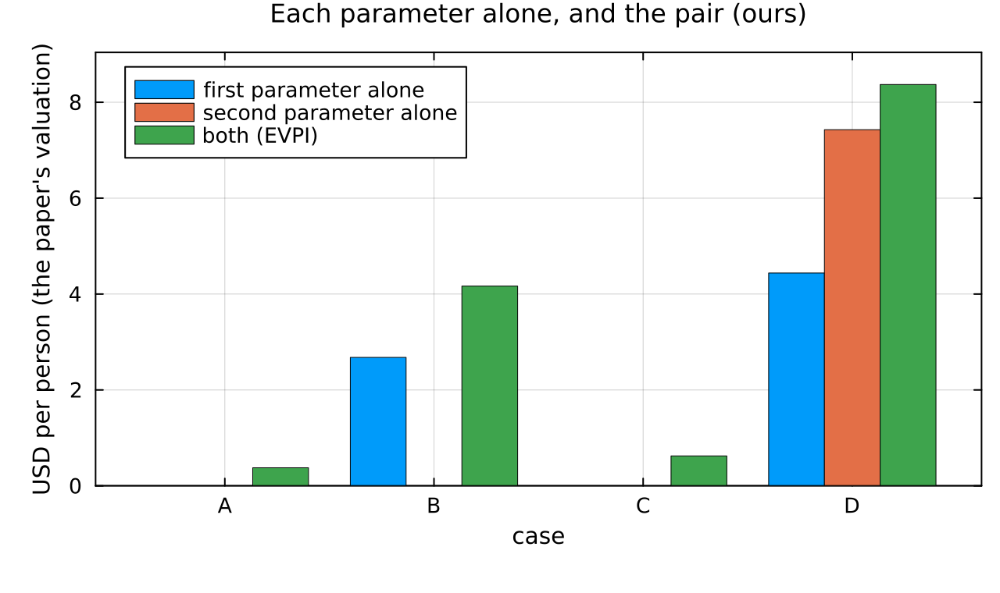

Which entomological uncertainty matters for malaria control (Kim et al. 2017)
Simon Frost
- About this case study
- The paper
- Without further information
- The published numbers
- Which of the two parameters (ours)
- What was not reproduced
About this case study
This case study replicates a published analysis. The inputs are tables printed in the paper, every result is shown beside the published one, and the same comparisons are in the test suite (test/fixtures/replications/kim2017_malaria.json, test/test_replications.jl).
The paper
Kim, Brown, Anderson, Mutero, Miranda, Wiener and Kramer (2017), “The value of information in decision-analytic modeling for malaria vector control in East Africa”, Risk Analysis 37:231-244, doi:10.1111/risa.12606. The inputs are Tables III and IV of the article and the targets its Table V.
Decision. Which vector-control programme to run for ten years in a rural East African setting.
Actions. The status quo, indoor residual spraying of 90% of houses, which is the baseline; larviciding four times a year; larviciding eight times a year; and spraying together with larviciding four times a year.
States. Four entomological parameters are uncertain: the fitness cost of insecticide resistance, the speed of its evolution, and the initial efficacy and the half-life of the larvicide. The paper takes three values of each and analyses them two at a time, in four cases of nine scenarios, the two parameters of a case being independent.
Outcome. Money: the paper’s valuation, net benefit in US dollars per person over ten years relative to the status quo (disability-adjusted life years averted at 7,773 dollars each, less the cost of the programme, discounted at 3% a year). The payoffs are outputs of the authors’ model, which is not rerun here. Nothing is valued by this package.
using DecisionAnalysis
include(joinpath("..", "_common.jl"))
# Table III: the three values of each parameter and their probabilities (lognormal).
probability = (fitness_cost=[65, 19, 16] .// 100, evolutionary_speed=[42, 45, 13] .// 100,
half_life=[39, 18, 43] .// 100, initial_efficacy=[65, 17, 18] .// 100)
level = (fitness_cost=["3%", "11%", "19%"], evolutionary_speed=["5", "9", "13"],
half_life=["3 days", "2 weeks", "3 months"], initial_efficacy=["70%", "85%", "100%"])
# Table IV: payoffs relative to the status quo, nine scenarios (the first parameter
# varies slowest) by larviciding x 4, larviciding x 8, spraying + larviciding x 4.
table4 = (A=(:fitness_cost, :half_life,
[153.3 183.6 150.0; 79.4 158.6 76.1; 47.2 117.6 43.9;
-47.7 25.5 20.9; -14.4 68.0 43.0; 62.2 93.9 96.4;
-47.7 25.5 20.9; -14.4 68.0 43.0; 62.2 93.9 96.4]),
B=(:fitness_cost, :initial_efficacy,
[69.6 127.3 66.3; 79.4 158.6 76.1; 12.8 48.2 9.5;
-24.8 35.2 37.7; -14.4 68.0 43.0; -81.8 -46.6 10.5;
-24.8 35.2 37.7; -14.4 68.0 43.0; -81.8 -46.6 10.5]),
C=(:evolutionary_speed, :half_life,
[-11.9 60.1 27.2; 21.0 102.1 53.4; 96.4 127.6 115.4;
-47.7 25.5 20.9; -14.4 68.0 43.0; 62.2 93.9 96.4;
-47.7 25.5 20.9; -14.4 68.0 43.0; 62.2 93.9 96.4]),
D=(:evolutionary_speed, :initial_efficacy,
[10.8 69.8 47.2; 21.0 102.1 53.4; -46.2 -11.0 8.4;
-24.8 35.2 37.7; -14.4 68.0 43.0; -81.8 -46.6 10.5;
-24.8 35.2 37.7; -14.4 68.0 43.0; -81.8 -46.6 10.5]))
actions = [:status_quo, :larviciding_4, :larviciding_8, :spraying_and_larviciding_4]
function case(name)
first, second, payoff = table4[name]
states = [Symbol(level[first][i], " / ", level[second][j]) for i in 1:3 for j in 1:3]
prior = [probability[first][i] * probability[second][j] for i in 1:3 for j in 1:3]
Q = vcat(zeros(Rational{Int}, 1, 9), permutedims(rationalize.(payoff; tol=1e-9)))
return DecisionProblem(PayoffTable(actions, states, Q), FiniteBelief(states, prior);
baseline=:status_quo)
end
name(parameter) = replace(String(parameter), "_" => " ")
problems = (A=case(:A), B=case(:B), C=case(:C), D=case(:D))
problems.D.payoffPayoffTable{Rational{Int64}}: 4 actions × 9 states
| action | 5 / 70% | 5 / 85% | 5 / 100% | 9 / 70% | 9 / 85% | 9 / 100% | 13 / 70% | 13 / 85% | 13 / 100% |
|---|---|---|---|---|---|---|---|---|---|
status_quo | 0 | 0 | 0 | 0 | 0 | 0 | 0 | 0 | 0 |
larviciding_4 | 10.8 | 21 | -46.2 | -24.8 | -14.4 | -81.8 | -24.8 | -14.4 | -81.8 |
larviciding_8 | 69.8 | 102.1 | -11 | 35.2 | 68 | -46.6 | 35.2 | 68 | -46.6 |
spraying_and_larviciding_4 | 47.2 | 53.4 | 8.4 | 37.7 | 43 | 10.5 | 37.7 | 43 | 10.5 |
Without further information
md_table(["case", "parameters", "chosen", "expected gain over the status quo (USD per person)"],
[[String(k), name(table4[k][1]) * " and " * name(table4[k][2]),
decide(problems[k], MaxExpectedUtility()).chosen,
Float64(act_now_value(problems[k]))] for k in keys(problems)])| case | parameters | chosen | expected gain over the status quo (USD per person) |
|---|---|---|---|
| A | fitness cost and half life | larviciding_8 | 119.86 |
| B | fitness cost and initial efficacy | larviciding_8 | 86.07 |
| C | evolutionary speed and half life | larviciding_8 | 76.89 |
| D | evolutionary speed and initial efficacy | larviciding_8 | 40.62 |
Larviciding eight times a year is the best programme in all four cases, as the paper reports. The status quo has payoff zero, so the expected payoff is the gain over it.
The published numbers
published = (A=(119.9, 120.2, 0.3), B=(86.1, 90.2, 4.1), C=(76.9, 77.5, 0.6), D=(40.6, 49.0, 8.4))
md_table(["case", "quantity (USD per person)", "paper (Table V, lognormal)", "this package"],
reduce(vcat,
[[[String(k), "best expected payoff", published[k][1], Float64(act_now_value(problems[k]))],
["", "with perfect information", published[k][2],
Float64(act_now_value(problems[k]) + evpi(problems[k]))],
["", "value of perfect information", published[k][3], Float64(evpi(problems[k]))]]
for k in keys(problems)]))| case | quantity (USD per person) | paper (Table V, lognormal) | this package |
|---|---|---|---|
| A | best expected payoff | 119.9 | 119.86 |
| with perfect information | 120.2 | 120.24 | |
| value of perfect information | 0.3 | 0.38 | |
| B | best expected payoff | 86.1 | 86.07 |
| with perfect information | 90.2 | 90.23 | |
| value of perfect information | 4.1 | 4.17 | |
| C | best expected payoff | 76.9 | 76.89 |
| with perfect information | 77.5 | 77.52 | |
| value of perfect information | 0.6 | 0.62 | |
| D | best expected payoff | 40.6 | 40.62 |
| with perfect information | 49 | 48.99 | |
| value of perfect information | 8.4 | 8.37 |
The two expected payoffs agree to the tenth of a dollar that the paper prints. The paper’s value of information is the difference of the two after rounding, so it prints 0.3 and 4.1 where the unrounded differences are 0.38 and 4.17. The largest value, 8.4 dollars per person for the speed of evolution with the initial efficacy, is a fifth of the expected gain of 40.6.
Which of the two parameters (ours)
The paper values each pair together. The same tables give the value of each parameter of a pair alone; these numbers are ours, not the paper’s.
alone(k) = (evppi(problems[k], [div(s - 1, 3) for s in 1:9]),
evppi(problems[k], [mod1(s, 3) for s in 1:9]))
md_table(["case", "first parameter alone", "second parameter alone", "both"],
[[String(k) * ": " * name(table4[k][1]) * ", " * name(table4[k][2]), Float64(alone(k)[1]),
Float64(alone(k)[2]), Float64(evpi(problems[k]))] for k in keys(problems)]; digits=3)| case | first parameter alone | second parameter alone | both |
|---|---|---|---|
| A: fitness cost, half life | 0 | 0 | 0.376 |
| B: fitness cost, initial efficacy | 2.679 | 0 | 4.166 |
| C: evolutionary speed, half life | 0 | 0 | 0.624 |
| D: evolutionary speed, initial efficacy | 4.439 | 7.428 | 8.37 |
M = reduce(vcat, [Float64[alone(k)... evpi(problems[k])] for k in keys(problems)])
plt = grouped_bars(["A", "B", "C", "D"],
["first parameter alone", "second parameter alone", "both (EVPI)"], M;
xlabel="case", ylabel="USD per person (the paper's valuation)",
title="Each parameter alone, and the pair (ours)", legend=:topleft)
png_figure(plt)
Parts do not add up to the whole. In case D the two values alone sum to more than the value of the pair, because what they tell overlaps. In cases A and C neither parameter alone is worth anything although the pair is: only knowing both changes the programme. The two higher values of the fitness cost give identical payoffs in Table IV, and so do the two higher speeds of evolution (the paper calls it saturation), so all that can be learned about either is whether it is at its low value.
What was not reproduced
Table V has a second column, for uniform distributions (EVPI 0.6, 13.1, 0.6 and 15.2). The probabilities of the three values under the uniform distributions are not printed, and equal thirds do not give the column:
function uniform_case(name)
p = problems[name]
return DecisionProblem(p.payoff, FiniteBelief(p.payoff.states, fill(1 // 9, 9));
baseline=:status_quo)
end
md_table(["case", "paper: best expected payoff (uniform)", "equal thirds", "chosen with equal thirds"],
[[String(k), u, Float64(act_now_value(uniform_case(k))),
decide(uniform_case(k), MaxExpectedUtility()).chosen]
for (k, u) in zip(keys(problems), (91.8, 49.2, 73.1, 30.2))])| case | paper: best expected payoff (uniform) | equal thirds | chosen with equal thirds |
|---|---|---|---|
| A | 91.8 | 92.73 | larviciding_8 |
| B | 49.2 | 49.7 | larviciding_8 |
| C | 73.1 | 73.84 | larviciding_8 |
| D | 30.2 | 32.38 | spraying_and_larviciding_4 |
In case D equal thirds make spraying with larviciding the best programme, where the paper says that larviciding eight times a year is best under both distributions. The uniform column is therefore quoted, not recomputed.